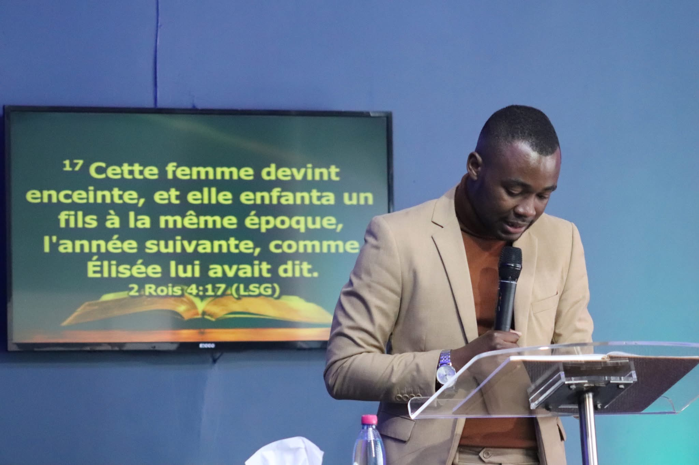
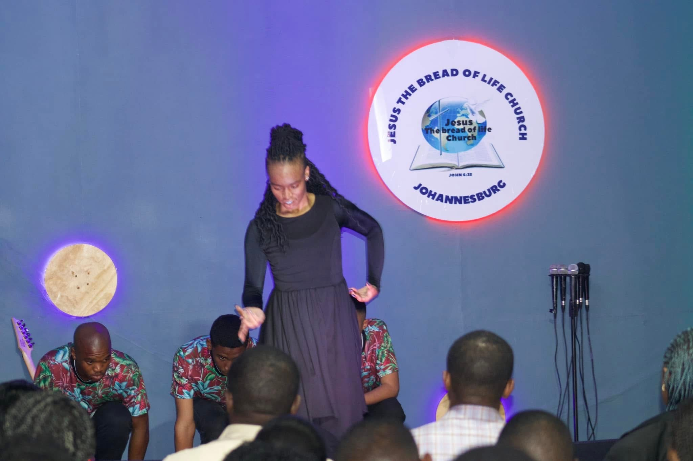
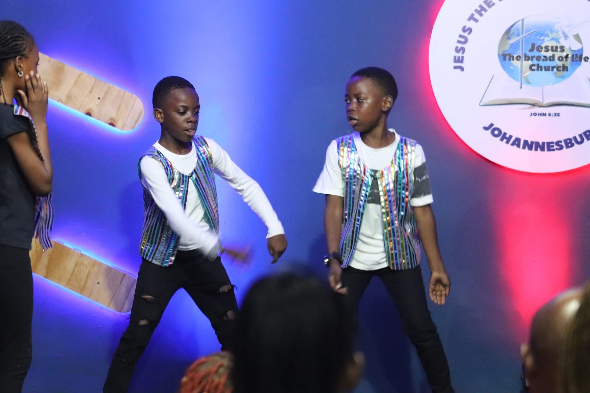
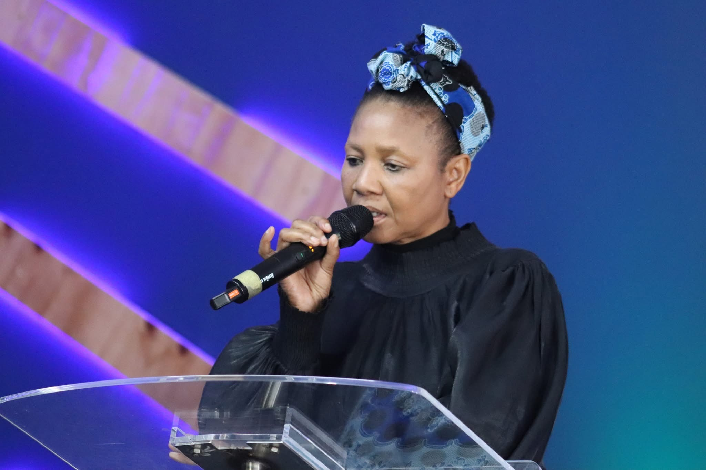

"I am the bread of life; whoever comes to me will never hunger, and whoever believes in me will never thirst" - John 6:35
"Blessed is the one who does not walk in step with the wicked or stand in the way that sinners take or sit in the company of mockers, but whose delight is in the law of the LORD, and who meditates on his law day and night..."
"Lord, who may dwell in your sacred tent? Who may live on your holy mountain? The one whose walk is blameless, who does what is righteous, who speaks the truth from their heart..."
"Keep this Book of the Law always on your lips; meditate on it day and night, so that you may be careful to do everything written in it. Then you will be prosperous and successful."




We are a vibrant, faith-driven community united by our love for Jesus Christ and our commitment to His Gospel. At Jesus The Bread Of Life Church, we believe in the transformative power of God's Word and the life changing presence of the Holy Spirit.
Our church is a family where believers gather to worship, grow, and serve together. We are passionate about creating an atmosphere where everyone from unbeleivers, longtime believers to those just beginning their spiritual journey can encounter the living God and experience his unconditional love.
To preach the gospel with boldness, reach the unreached with compassion, and nurture believers in their walk with Christ through authentic discipleship, fervent prayer, and the faithful teaching of God's Word.
To be a lighthouse of hope in our community, raising a generation of committed disciples who will impact the world for Christ, demonstrating His love through service, and advancing His kingdom on earth.
Grounded in Scripture
Loving God & People
Seeking God's Presence
Reaching the Lost
A dedicated shepherd of God's flock and faithful servant of the Word, Pastor Gaspard leads Jesus The Bread Of Life Church with unwavering passion, prophetic vision, and deep compassion for souls.
Under the guidance of the Holy Spirit, he has been instrumental in building a community that prioritizes authentic worship, biblical teaching, and genuine fellowship. His heart for the lost and commitment to discipleship continues to inspire our congregation to live out their faith boldly.
📅 More events will be announced soon. Stay tuned for updates throughout 2026!

A man of God whose life was a testament to faith, dedication, and unwavering commitment to the Gospel of Jesus Christ.
We honor the memory of our beloved spiritual father and leader whose profound impact continues to resonate in our hearts and ministry. His legacy of faith, love for God's Word, and passion for souls remains an enduring inspiration to all who knew him. Though he has gone to be with the Lord, his teachings, prayers, and Godly example lives on, in the lives he touched and the church he helped build.
His memory is a blessing, and his influence eternal.



